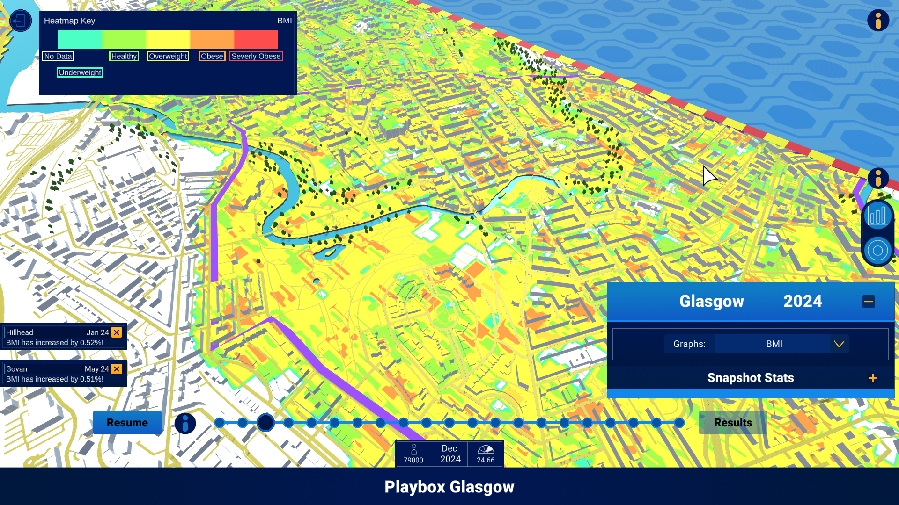
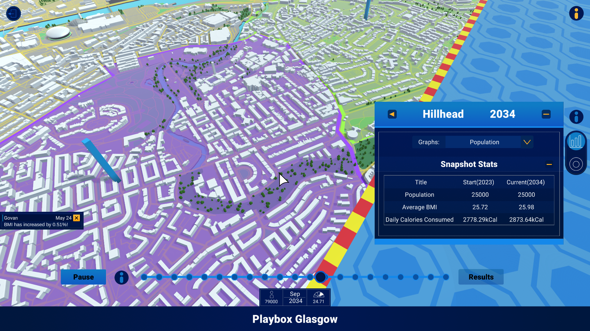

Nesta Playbox
Following on from the prototype we worked with Nesta and InGAME to take the project further. This resulted in a digitial twin mapping the food environment within Glasgow

The project differed in terms of the mechanics/features quite drastically from the previous prototype. This meant I got to work on a lot of new things.
The mechanics / feautres I ended up being responsible included:
Data recording: One of the key mechanics of the playbox was being able to use the time slider to go back in time to view the digitial twin at different states as well as graph the data in 2D at the end.
3D Data views: This included both heatmaps and the 3D bargraphs extending out of the relevant wards(Glasgow's term for subregions within the city). The 3D heatmap was especially difficult as the client didn't want the data being simulated on an individual level or to be tied specifically to houses. This just meant that data was simulated for a subregion such as "Govan". This meant having to find a way to consistently paint a heatmap by linking data to specific spots on the map within the relevant regions. The result is something I personally think could be improved and with more time I would've loved to experiment with different approaches / solutions to this problem.
Notifictions: When a major event happens within the simulation a notificaion is sent to be displayed in the UI, only 3 notifications can be displayed at a time so if a new notification is sent the oldest one is automatically removed. They can also be dismissed manually by the user in any order and they are animated to move up, slide in and slide out for the relevant actions.
Districts and data panels: I created a tool to paint 2D polygons over the map so we could draw the region boundries that we were simulating within Glagsow. They fade in and out depending on the players zoom level and can be clicked on to pop open a data view window of the displaying current relevant statistics for that region.